Algunos Datos
Gravedad: 3.711 m/s²
Duración del día: 1d 0h 37m
Radio: 3,389.5 km
Período orbital: 687 días
Superficie: 144.8 millones km²
Lunas: Fobos, Deimos
Distancia con el sol: 54 600 000 kilómetros
Distancia con la tierra: 225 millones de kilómetros
 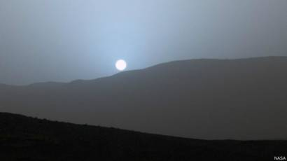
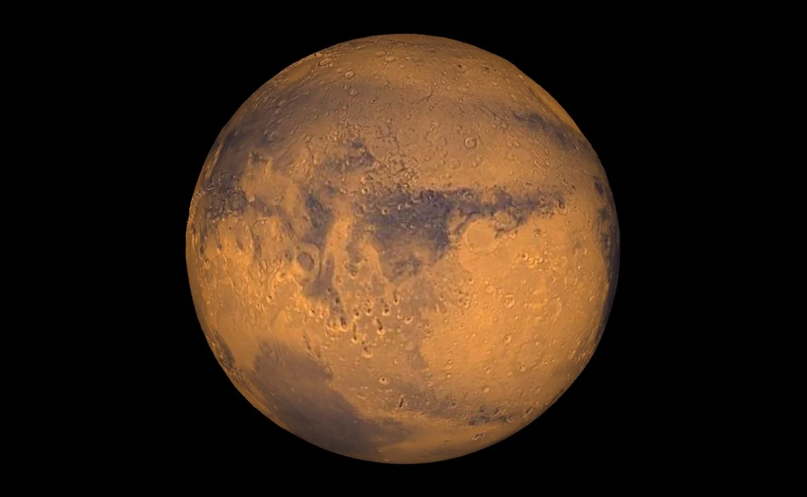
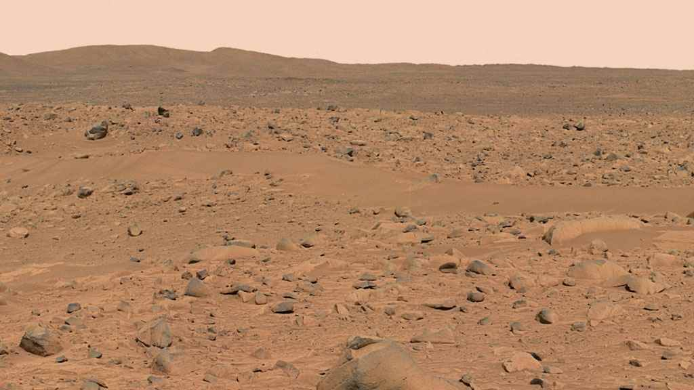
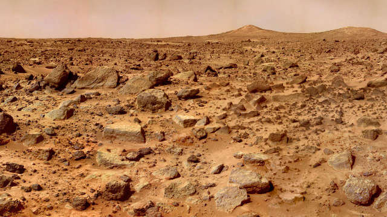
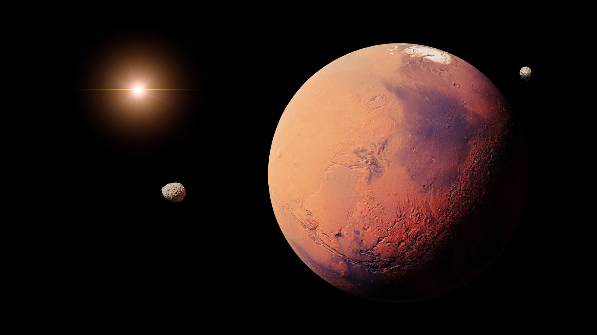
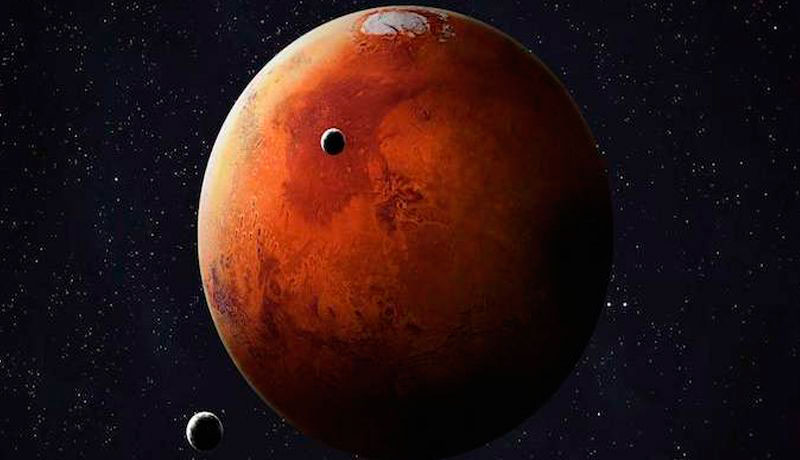
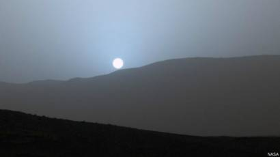
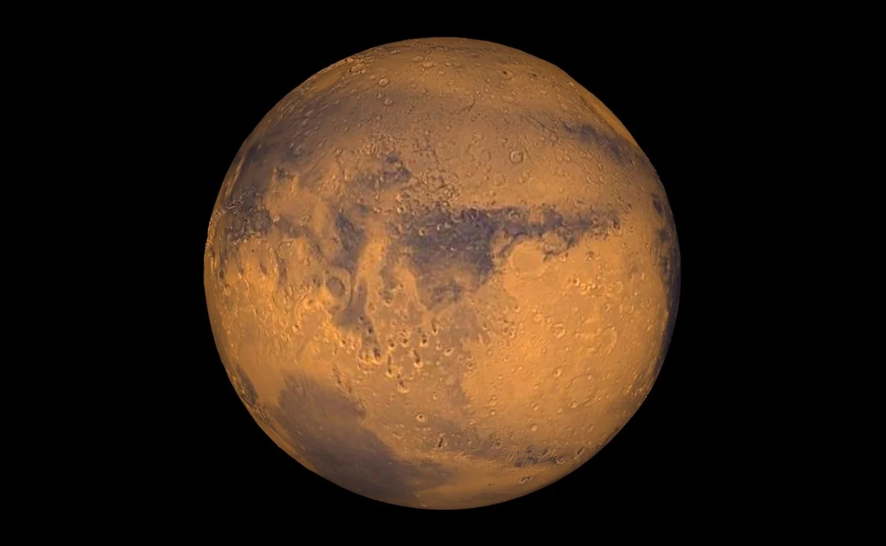
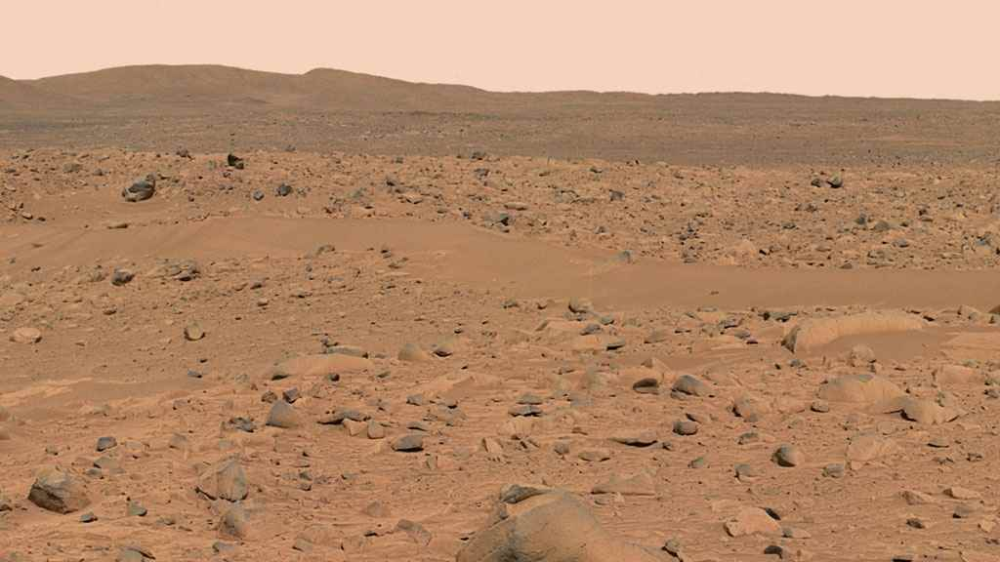
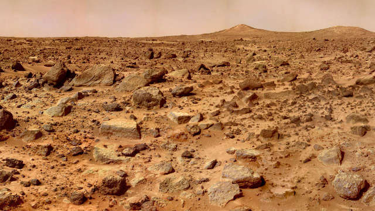
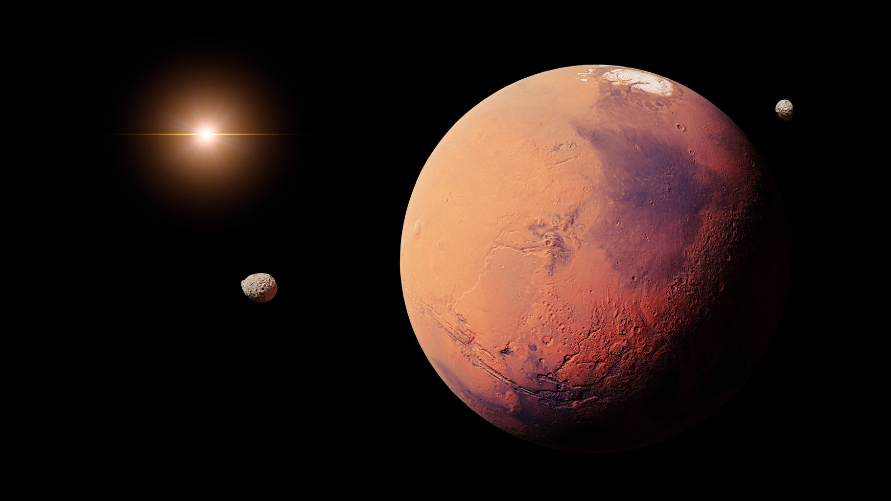
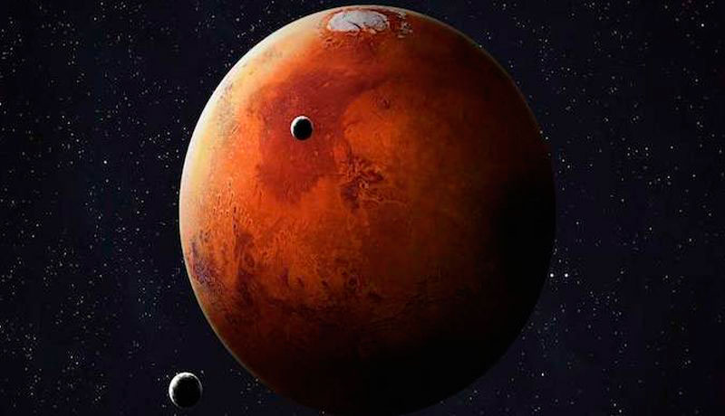